Locații de nuntă în județul Dolj
- locații în director
- 15
- cu cazare în registrul SITUR
- 5
- medie ponderată Google
- 4,4 / 5
- evaluări Google
- 2.902
Cum alegi unde mergi la vizionare
Începeți cu Craiova dacă invitații vin din oraș, apoi comparați variante din Malu Mare, Bechet sau din zona Beharca. Pentru o locație care oferă atât grădină, cât și salon, cereți ca oferta să precizeze intervalul în care se poate folosi fiecare.
La Imperial Resort Beharca sunt menționate grădina și terasa. Când stabiliți o vizionare, cereți să vedeți un aranjament în fiecare dintre ele. Pentru o cununie cu mulți invitați în vârstă, contează dacă aceștia pot rămâne la aceeași masă până după fotografii. La un restaurant din Craiova puteți compara aceeași succesiune de momente înainte de a cere prețul per persoană.
Două adrese pentru o zi de vizionări
Pe hartă, între aceste două proprietăți sunt 6,3 km în linie dreaptă. Deschide indicațiile de drum din fișe ca să vezi traseul pe șosea înainte de a stabili a doua întâlnire.
- La Conac · Balasan
- Royal Hotel & Events · Strada Independenței 65, 205100 Băilești
Spații exterioare menționate de operatori
- Imperial Resort Beharca · Eveniment în grădină sau pe terasă
Explorează după localitate
Toate locațiile din județul Dolj
Ordinea ține cont de nota Google și de numărul evaluărilor. Cum calculăm ordinea
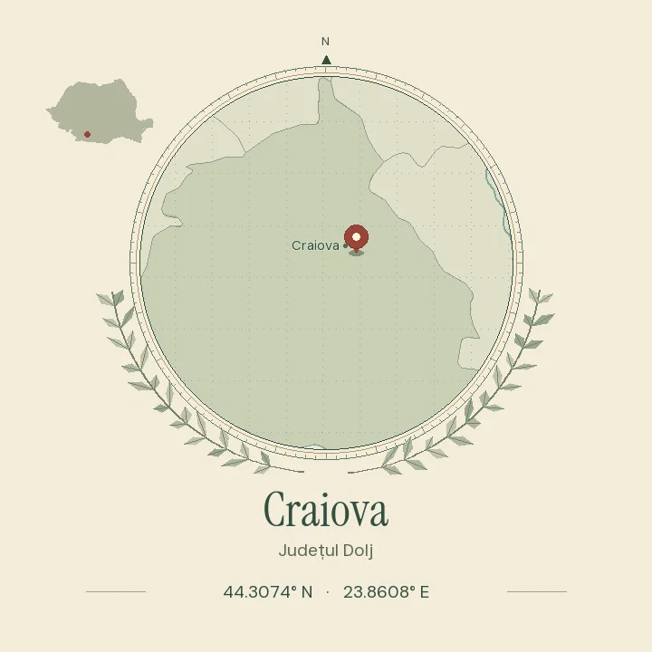
Hartă ilustrată Craiova · Cazare
Pensiunea Magnolia
Un oaspete singur la Magnolia din Craiova a găsit camera potrivită pentru o persoană și a apreciat micul dejun, deși în zile succesive a observat că…
Aleea 4 Banu Mărăcine nr. 8F, 10, Craiova+40 785 532 255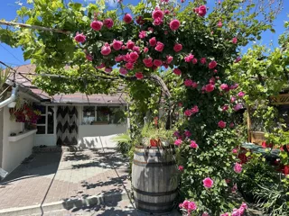
Fotografie a locației · Sursa fotografiei Călărași · Pensiune
Home and Garden (EuroVelo6) - Pensiune, Hotel & Camping
Pensiune mică în Călărași, Dolj, cu grădină și gazde lăudate; cazare de la 15 € pe noapte. Utilă pentru câțiva invitați, nu pentru petrecere.
Strada Petre Baniță 128, 207170 Călărași+40 736 229 464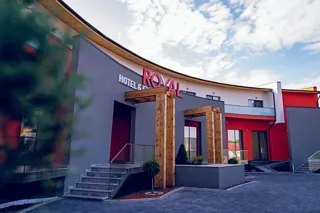
Fotografie a locației · Sursa fotografiei Băilești · Hotel
Royal Hotel & Events
Royal Hotel & Events, Băilești. Familia menționează 302 invitați prezenți atunci și cazarea acestora la hotel.
Strada Independenței 65, 205100 Băilești+40 799 734 229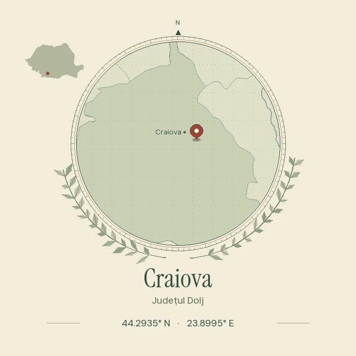
Hartă ilustrată Craiova · Local pentru evenimente
Domeniul Craiovesti
Sală modernă pe Strada Aeroportului din Craiova, cu acustică bună și grădină în spate; 4,9 din 15 evaluări, încă puține recenzii.
Strada Aeroportului 218, 200786 Craiova+40 722 136 636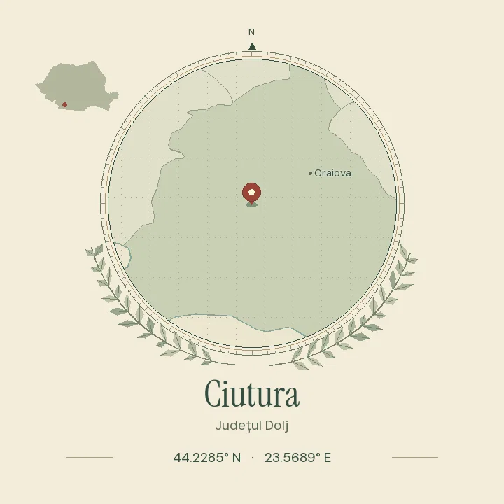
Hartă ilustrată Ciutura · Bed & Breakfast
La Conac Ciutura
La Conac Ciutura. Cartofii prăjiți în untură, vinul și muzica de la masă sunt lucrurile pe care le reține un client de la Conacul Ciutura.
DJ552A 9, Ciutura+40 773 307 153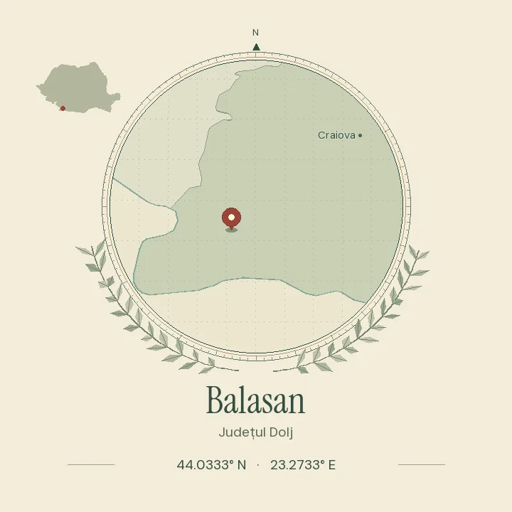
Hartă ilustrată Balasan · Restaurant
La Conac
Un vizitator descrie La Conac din Bălășan ca pe o clădire rustică la marginea satului, cu deschidere spre câmp.
Balasan+40 721 334 344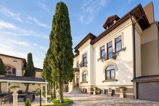
Fotografie a locației · Sursa fotografiei Craiova · Hotel
Anemona Boutique Hotel
Vilă veche transformată în hotel boutique pe strada Crișului din Craiova: grădină interioară, spa, jacuzzi și câteva lucruri de verificat.
Strada Crișului 9b, 200391 Craiova+40 762 382 318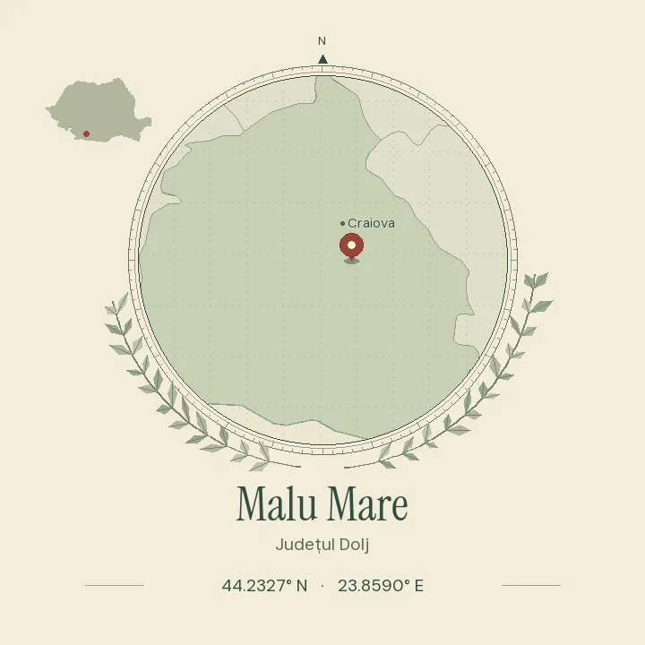
Hartă ilustrată Malu Mare · Castel
Conacul Poenaru
Conac cu turn și frontoane la Malu Mare, Dolj, cu doar 2 evaluări și fără recenzii scrise. Ce să clarifici despre acces înainte de un eveniment.
207365 Malu Mare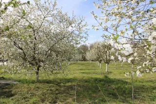
Fotografie a locației · Sursa fotografiei Zona Almăj · Bed & Breakfast
Jianca - pensiune agroturistica
Jianca - pensiune agroturistica. Pentru o recepție la apă, cereți în ofertă orele rezervate grupului și precizați dacă doriți ospătari la mesele exterioare.
European Road 70, 207010+40 745 105 310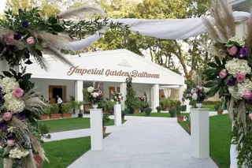
Fotografie a locației · Sursa fotografiei Beharca · Centru de evenimente
Imperial Resort Beharca
La Imperial Resort Beharca, terasa apare explicit în oferta de cununii și aniversări, cu un reper de până la o sută de persoane pentru evenimentele de acolo.
E70, 207011 Beharca+40 738 843 507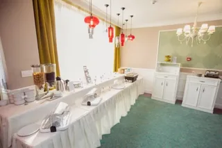
Fotografie a locației · Sursa fotografiei Craiova · Hotel
Hotel Splendid 1900
Un cuplu care alege Hotel Splendid 1900 pentru pregătiri ajunge foarte aproape de zona pietonală și de centrul vechi al Craiovei, potrivit unui oaspete.
Strada Alexandru Ioan Cuza 4C, 200734 Craiova+40 737 023 921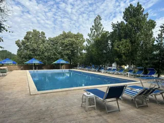
Fotografie a locației · Sursa fotografiei Bechet · Hotel
Casa Verde - Cazare Bechet
Cazare cu restaurant, foișoare și piscină în Bechet, Dolj. Cazare de la 200 de lei pe noapte; ce să verificați înainte de o petrecere în grădină.
Calea Dunării 7, 207060 Bechet+40 740 045 442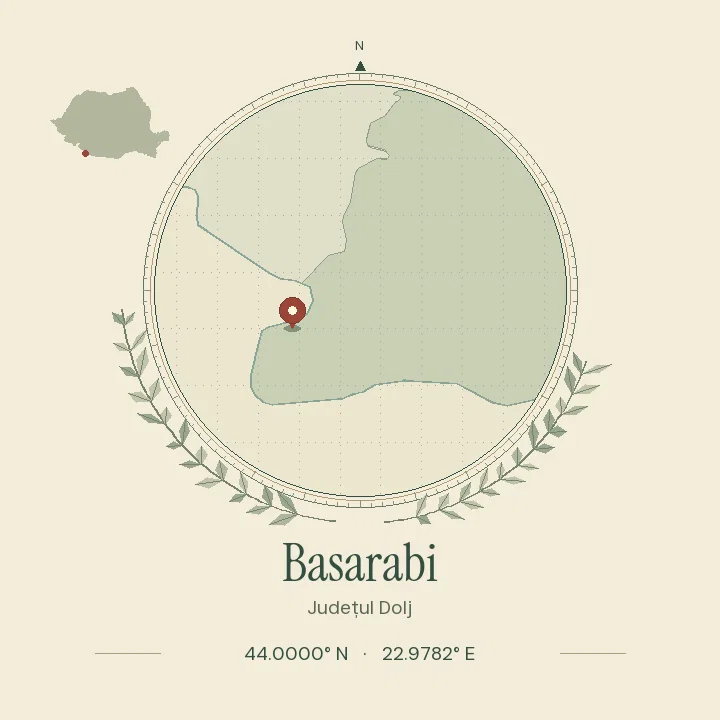
Hartă ilustrată Basarabi · Bed & Breakfast
Pensiunea La Tase
Pensiunea La Tase, Basarabi. Un călător în tranzit pe lângă Calafat a putut lua masa în foișorul de la La Tase.
nr.291 Strada Calea Craiovei, 205201 Basarabi+40 745 076 165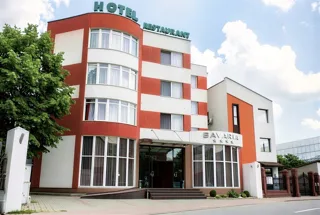
Fotografie a locației · Sursa fotografiei Craiova · Hotel
Hotel Bavaria
Hotel Bavaria, Craiova. O persoană care a stat la Bavaria în Craiova spune că a avut unde parca și a apreciat climatizarea camerei.
Strada Caracal 3, 200347 Craiova+40 251 414 449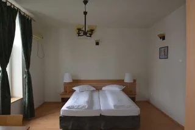
Fotografie a locației · Sursa fotografiei Craiova · Bed & Breakfast
Pensiunea Restaurant Carmelita
Un călător care a ales Carmelita pentru amplasarea apropiată de centrul Craiovei își amintește camera spațioasă și o neînțelegere privind micul dejun.
Strada Împăratul Traian 41, 200530 Craiova+40 728 033 339
Întrebări despre locațiile din județul Dolj
Unde pot dormi invitații în județul Dolj?
În registrul de cazare SITUR găsim Pensiunea Magnolia (16 locuri de cazare), Royal Hotel & Events (38 de locuri de cazare), Hotel Splendid 1900 (41 de locuri de cazare). Verifică ce camere sunt libere pentru noaptea evenimentului.
Ce spații sunt documentate pentru evenimente în aer liber în județul Dolj?
Imperial Resort Beharca — Eveniment în grădină sau pe terasă.
Care locație din județul Dolj are cele mai multe evaluări Google?
Hotel Bavaria are 571 de evaluări în profilul Google folosit la documentare. Evaluările acoperă și alte experiențe la proprietate, inclusiv vizitele fără eveniment.
Unde apare o intrare accesibilă în județul Dolj?
Profilurile Google indică o intrare accesibilă la Imperial Resort Beharca. Pentru o cununie în exterior, cere detalii despre traseul dintre intrare și zona cu scaune.